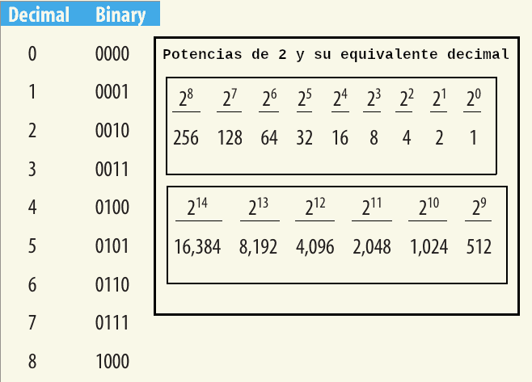
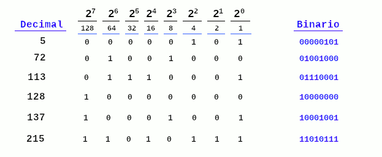

Numeros Binarios
La CPU solo entiende números binarios, cuyos dígitos son 0 o 1. Todos los datos se almacenan en la memoria de una computadora como Dígitos binarios. Un bit contiene un dígito binario. Un byte contiene ocho dígitos binarios. Los números binarios se expresan en el sistema de base 2, porque sólo hay 2 valores en ese sistema, 0 y 1. Por el contrario, la mayoría de la gente está acostumbrada al sistema decimal, o de base 10, que utiliza los valores del 0 al 9.
Existen otros sistemas de numeración, como el sistema octal, o de base 8, que utiliza los dígitos del 0 al 7 y el sistema hexadecimal, o de base 16, que utiliza los dígitos del 0 al 9 y las letras de la A a la F.
Tal como lo conocemos en el sistema decimal, el número 359 está compuesto por los siguientes tres dígitos:
- 3, representando las centenas, o 102
- 5, representando las decenas, o 101
- 9, representando los unos, o 100
Por lo tanto, podemos escribir 359 como
359 = 3 * 102 + 5 * 101 + 9 * 100
Así, el número decimal 359 se escribe como una combinación lineal de potencias de 10 con coeficientes del alfabeto base 10, es decir, los dígitos del 0 al 9.
De manera similar, el número binario 11011 se escribe como una combinación lineal de potencias de 2 con coeficientes del alfabeto base 2, es decir, los dígitos 0 y 1.
Por ejemplo, el número binario 11011 se puede escribir como
11011 = 1*24 + 1*23 + 0*22 + 1*21 + 1*20
La Tabla siguiente enumera los equivalentes binarios para los números decimales del 0 al 8 y enumera los equivalentes decimales de las primeras 15 potencias de 2.

Observe que a medida que contamos en incrementos de 1 (en decimal), el último dígito (en binario) alterna entre 0 y 1.
Para convertir un número binario a decimal, multiplique cada dígito del número binario por 2posición - 1, considerando la posición más a la derecha
como posición 1 y aumentando al desplazarnos hacia la derecha. Luego, sume los productos.
Usando este método, calculemos el equivalente del número binario 11010 en nuestro sistema decimal.
11010 = 1*24 + 1*23 + 0*22 + 1*21 + 0*20
= 16 + 8 + 0 + 2 + 0
= 26
Ahora examinemos cómo convertir un número decimal en un número binario.
Convirtamos el número decimal 359 a su equivalente binario. Un método consiste en sumar las potencias de 2 necesarias para alcanzar 359. La estrategia a seguir consiste en:
- encontrar la mayor potencia de 2 que sea menor o igual que el número decimal.
- Restar ese número al número decimal,
- Repetir el proceso con el resto, y así sucesivamente, hasta llegar a 0.
(1) La mayor potencia de 2 menor que 359 es 256, o 28 (la siguiente potencia mayor de 2 sería 512, que es mayor que 359).
(2) Restar 256 de 359 nos da 103 (359 - 256 = 103), por lo que ahora tenemos 359 = 28 * 1 + 103
(3) (1) Ahora aplicamos el mismo procedimiento a 103. La mayor potencia de 2 que es menor que 103 es 64, o 26. Eso significa que no hay ningún factor para 27, por lo que el valor de ese dígito es 0.
(2) Restar 64 de 103 nos da 39. Ahora tenemos
359 = 28 * 1 + 27 * 0 + 26 * 1 + 39
(3)(1)(2) Repitiendo el procedimiento para 39, encontramos que la mayor potencia de 2 menor que 39 es 32 o 25. Restar 32 de 39 nos da 7.
Así que ahora tenemos: 359 = 28 * 1 + 27 * 0 + 26 * 1 + 25 * 1 + 7
(3)(1)(2) Repitiendo el procedimiento para 7, la mayor potencia de 2 menor que 7 es 22, o 4. Eso significa que no hay factores para 24 o 23, por lo que el valor de cada uno de estos dígitos son 0. Restar 4 de 7 nos da 3, por lo que tenemos:
359 = 28 * 1 + 2⁷ * 0 + 2⁶ * 1 + 2⁵ * 1 + 2⁴ * 0 + 2³ * 0 + 2² * 1 + 3
Repitiendo el procedimiento para 3, la mayor potencia de 2 menor que 3 es 2, o 2¹, y tenemos:
359 = 28 * 1 + 2⁷ * 0 + 2⁶ * 1 + 2⁵ * 1 + 2⁴ * 0 + 2³ * 0 + 2² * 1 + 2¹ * 1 + 1
1 es una potencia de 2; es 2⁰, por lo que finalmente tenemos
359 = 28 * 1 + 2⁷ * 0 + 2⁶ * 1 + 2⁵ * 1 + 2⁴ * 0 + 2³ * 0 + 2² * 1 + 2¹ * 1 + 2⁰ * 1
359 se puede representar en el sistema binario como:
359 = 1 0 1 1 0 0 1 1 1
o bien 1 0110 0111
